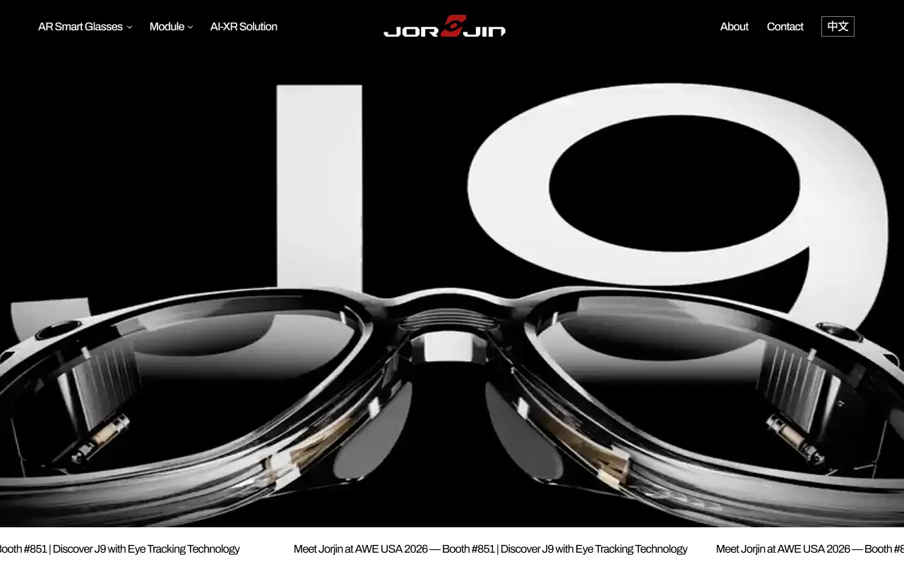
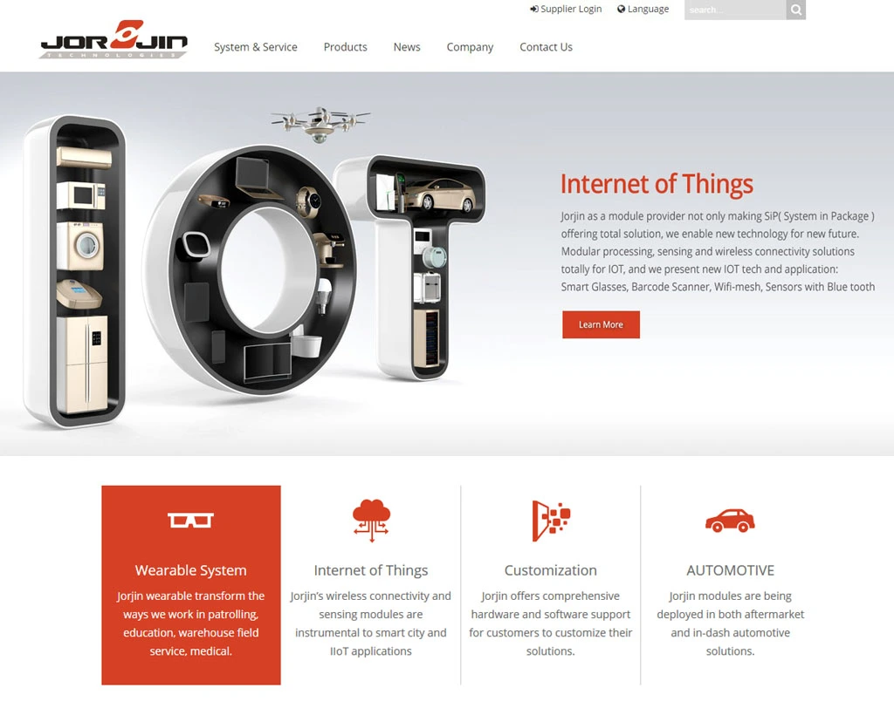
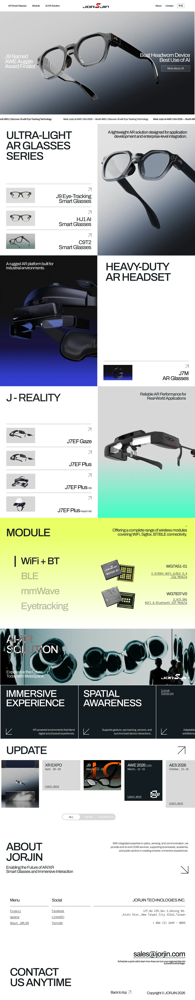

Jorjin Corporate Website
UX architecture × design system × frontend development × technical SEO — building a brand-distinctive corporate website for a smart glasses company.
SEO · Design System

Design Context
Jorjin is a hardware-first smart glasses company with no dedicated frontend engineer. The previous website ran on WordPress — constrained by template limitations and difficult plugin maintenance, leaving large volumes of product information disorganized and the user experience fragmented. After joining, I led a full website redesign: restructuring the company narrative, smoothing the user journey, and building a complete SEO foundation to improve organic search rankings.
Challenges
- Integrating three business lines: Jorjin's products span ODM glasses manufacturing, module sales, and smart glasses application planning. The core challenge was presenting the company's full scope without overloading visitors — helping them quickly grasp what Jorjin does and explore the relevant business line.
- Raising visual quality: Jorjin's industrial design capability is strong, and the website needed to reflect that. I brought in a visual designer to collaborate — they handled product renders and video assets, while I managed design system planning and frontend implementation, together elevating the overall visual quality to a new level.
What I Did
- Planned overall UX architecture and information hierarchy, defining content priorities across three business lines
- Built a Design System to unify visual language and component specifications
- Led full-site frontend development in Next.js, with manually crafted responsive layouts
- Planned and implemented technical SEO: dynamic Sitemap, bilingual hreflang, metadata management, and Search Console iteration
Design Process
The redesign covered information architecture, visual system, component library, and frontend implementation — planned and led by me, with deep collaboration with a visual designer.
Interviews first — information hierarchy built around the ODM model
Before redesigning, I conducted lightweight interviews with internal team members to understand what each department wanted to communicate externally, then held in-depth interviews with sales and management to clarify core product strengths and communication priorities.
Based on interview findings, I structured the site with "complete smart glasses" as the entry point, ODM manufacturing as the central axis, and extended outward to core module sales and AR application use cases — letting visitors quickly understand what Jorjin does, then explore the relevant business line at their own pace.
- ODM / OEM: Full glasses manufacturing — the company's core business and the primary axis of the site
- Module: Core optical modules, targeting system integrators
- Solution / Application: AR deployment planning, targeting enterprise end-users
Design-led, no templates — a visual language derived from the designer's layout style
Following a "design-first" principle, I avoided ready-made templates. Starting from the visual designer's layout style, I synthesized a complete Design System to preserve the site's distinctive visual identity.
- Color: Dark background, premium tech aesthetic with high-contrast accent colors to emphasize product presence.
- Typography: Tight letter-spacing on headings, with clearly defined line-height and tracking for headings, body, and labels — creating strong visual hierarchy.
- Component spec: Unified button styles with fully defined Normal / Hover / Selected states; all interactive components follow consistent state rules.
- Responsive: All breakpoints manually planned — no auto-scaling frameworks — ensuring every layout decision was intentional, not mechanically compressed.
The Design System was shared with the visual designer, ensuring product renders and video assets could be placed directly into the layout without adjustment. The goal: maximize the visual impact of the product and leave a lasting impression on visitors.


Technical SEO setup × Search Console iteration — no keyword research tools needed
The SEO work was grounded in technical foundation, continuously iterated using Google Search Console data — without relying on keyword research tools.
- Dynamic Sitemap: Auto-generated via Next.js, covering all
/products/[slug]and/modules/[slug]pages — new products are indexed automatically without manual updates. - Bilingual hreflang: English (
/) and Traditional Chinese (/zh) versions correctly configured withhreflangalternates, letting Google serve the appropriate version by user locale. - Metadata management: Each page has its own
<title>and<meta description>, with precise, non-duplicated descriptions. - Search Console monitoring: Submitted Sitemap, corrected indexing errors, and regularly adjusted page copy and internal linking based on impressions, CTR, and ranking data.
Results
Comparison period: Pre-redesign baseline (Mar–Nov 2025) vs. post-redesign stable phase (Jan–Jun 2026). Source: Google Search Console.
Jumped from the bottom of page 2 to the top of page 1 in search results. After restructuring the technical SEO architecture, Google's relevance assessment for the pages improved dramatically. Comparison: Mar–Nov 2025 vs. Jan 16–Jun 22, 2026.
The new title tags and meta descriptions proved more compelling to searchers — users became more likely to choose Jorjin from search results.
The Next.js dynamic Sitemap auto-updates when new products are published. All 8 new pages — including /products/hj1, /products/j9, /products/c9t2 — were indexed and received organic traffic after launch. The bilingual homepage (/zh) also gained independent search traffic, confirming correct hreflang configuration.
Reflection
The most rewarding part of this project was holding to the "design-first" principle. As AI tools and website builders proliferate, many sites are converging toward the same templates and visual language. When planning Jorjin's website, I deliberately resisted that pull — working closely with a visual designer and letting the design lead. After establishing the main interaction flows, the visual design drove everything; the frontend implementation followed faithfully, never compromising visual details for technical convenience. The result is a website with a clear identity in both usability and aesthetic — the right choice for a company whose core competency is hardware design.
Key Takeaways
- Design-first, faithfully implemented — never let tooling dictate visual decisions
- In the age of AI tools, distinctiveness itself is a competitive advantage
- Deep collaboration between UX and visual design is key to breaking through template homogenization
- Frontend capability lets design decisions land directly — reducing communication overhead and compromise